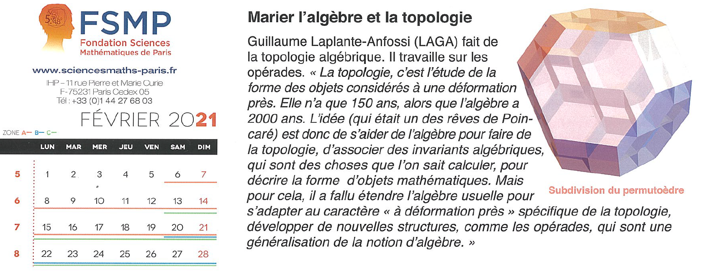

Autres
Vulgarisation
mathématique
Mon sujet de thèse en
quelques lignes, dans le calendrier de l'année 2021 de la FSMP.

Quelques livres passionnants pour
s'introduire aux mathématiques et à la physique.
- Logicomix,
Apóstolos Doxiádis et Christos Papadimitriou.
Éducation
"Il faudrait que le système éducatif soit un
endroit où l'on transforme complètement la signification du mot «échec».
L'échec scolaire, ce n'est pas l'échec de l'enfant, c'est l'échec du
système à tous les coups. Comment ose-t-on faire de la compétition quand
il s'agit de se construire? Et cette compétition, on en fait même une
course de vitesse. Or la vitesse n'a rien à voir avec l'éducation, avec la
construction de soi. On ne peut aller que lentement pour se construire,
pour comprendre. Celui qui ne comprend pas comprend qu'il n'a pas compris.
Donc, il progresse dans la compréhension. Celui qui croit avoir compris
«bluffe»; en réalité il va vite et on lui donne une bonne note. Ce n'est
pas sérieux."
- Albert Jacquard, "Construire une civilisation terrienne", 1994, Les
grandes conférences, Éditions Fides.
Travail
mathématique
- Alain Connes, "Le travail mathématique relève du domaine de
l'artistique, ou la métaphore de la perceuse", 2009 (?). Retranscription.
Interventions
publiques